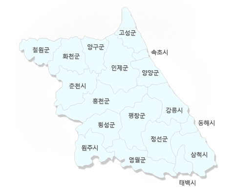

강원도
강원도기
전체적으로는 풍요롭고 생동감 있게 발전하는
강원도를 상징.
각 생상에는 강원도를 상징하는 의미를 반포
(도민화합, 도의 이미지 표상)
청색의 타원은 안정된 마음의 고향인 대지를 의미
녹색은 깨끗하고 수려한 자연환경을 의미
황색은 유구한 역사적 문화환경을 의미하며
안정된 사각형으로 자연과 문화의 조화 표현
가운데 나뭇잎 모양은 새로운 도약을 약속하는
도민의 마음이 담겨있다.
강원도의 캐릭터 반비
반비는 강원도를 대표하는 캐릭터로서
강원도의 상징동물인 반달곰을 의인화하여
믿음직스러우며 다정다감한 이미지로 형상화 하였다.
반비이름은 미래로, 세계로, 통일로 비상하는
반달곰의 의미를 담고 있다.
